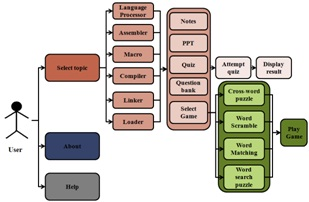

SysPro is a Mobile Application for System Programming subject of Third Year of Computer Science and Engineering. This subject contains six chapters namely
For each chapter, following contents are provided
For each chapter, Games part contains the following chapter related games

References:
For more information, contact:
Mrs. Sunita Milind Dol, sunitaaher@yahoo.com,
Mr. P.S.R.Patnaik, psrpatnaik@gmail.com
Walchand Institute of Technology, Solapur, Maharashtra